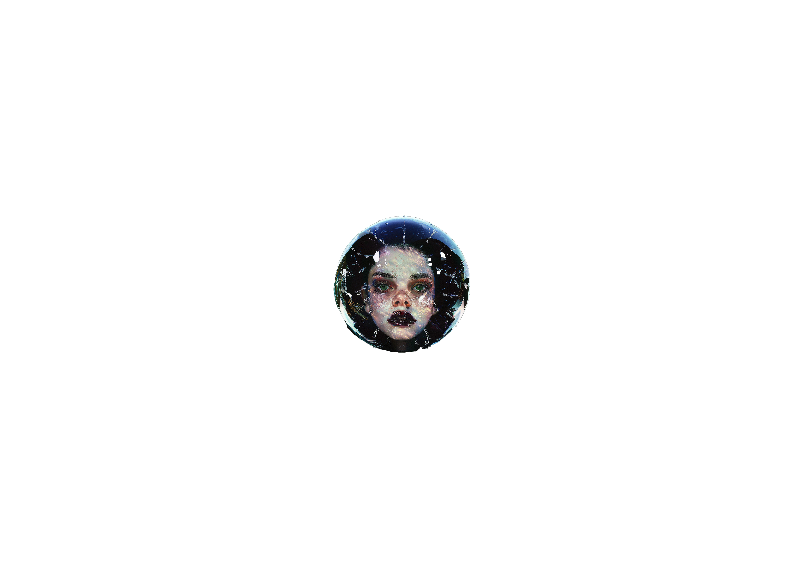

Burst Day
vant and effective in promoting its goals of diversity and connection. The success stories and positive outcomes from Burst Day serve as a testament to the power of intentional exploration and the importance of embracing the unknown. The future of Burst Day holds exciting possibilities. As technology continues to evolve, there are opportunities to enhance the Burst Day experience through innovations such as virtual reality, artificial intelligence, and advanced data analytics. These technologies could be used to create even more immersive and personalized exploration experiences, allowing users to engage with new communities and cultures in more profound and meaningful ways. By celebrating the richness of our differences and the common threads of our humanity, Burst Day fosters a more inclusive, empathetic, and interconnected society. As we look to the future, the principles of Burst Day offer a blueprint for creating a world where technology enhances our ability to connect, learn, and grow, rather than limiting our horizons. It is a call to embrace the unknown, to celebrate the unexpected, and to rediscover the joy of exploration in all its forms. For example, virtual reality could provide users with the ability to attend cultural festivals or explore historical sites from around the world, while AI could offer personalized recommendations and insights based on a deeper understanding of users’ interests and behaviors. Furthermore, Burst Day could inspire the development of new educational and cultural programs that prcorporate world, where organizations can adopt similar principles to foster innovation and creativity. By encouraging employees to explore new ideas and engage with diverse perspectives, companies can create a more dynamic and inclusive workplace culture. This can lead to increased collaboration, improved problem-solving, and greater adaptability in a rapidly changing world. In conclusion, Burst Day is a powerful reminder of the importance of diversity, curiosity, and connection in our increasingly digital and personalized world. It challenges us to break free from our social bubbles and explore the vast and varied landscape of human experience. By celebrating the richness of our differences and the common threads of our humanity, Burst Day fosters a more inclusive, empathetic, and interconnected society. As we look to the future, the principles of Burst Day offer a blueprint for creating a world where technology enhances our ability to connect, learn, and grow, rather than limiting our horizons. It is a call to embrace the unknown, to celebrate the unexpected, and to rediscover the joy of exploration in all its forms.
Burst Day, a unique and transformative event celebrated annually, is designed to shatter the boundaries of our digital and social bubbles. It is a day dedicated to exploring new horizons, engaging with unfamiliar cultures, and connecting with diverse communities. In an era where algorithms and personalized content often reinforce our existing preferences and narrow our perspectives, Burst Day stands as a countermeasure to this digital echo chamber effect. It invites us to break free from the constraints of our curated experiences and embrace the richness of human diversity. This comprehensive exploration of Burst Day delves into its origins, preparations, impact, and the profound ways it encourages us to rediscover the world beyond our immediate interests. The inception of Burst Day can be traced back to the growing concerns about the consequences of algorithmic personalization. As we navigate through digital platforms, sophisticated algorithms analyze our behavior, preferences, and interactions to curate content that aligns with our tastes. This tailored content, while convenient and engaging, gradually narrows our view of the world. We become accustomed to a steady stream of familiar topics, viewpoints, and communities, leading to the phenomenon known as the filter bubble or echo chamber effect. These bubbles limit our exposure to different perspectives, reinforce existing biases, and stifle personal growth and social cohesion. Recognizing the need to address these challenges, a coalition of digital platforms, social scientists, and cultural organizations conceived the idea of Burst Day. By celebrating the richness of our differences and the common threads of our humanity, Burst Day fosters a more inclusive, empathetic, and interconnected society. As we look to the future, the principles of Burst Day offer a blueprint for creating a world where technology enhances our ability to connect, learn, and grow, rather than limiting our horizons. It is a call to embrace the unknown, to celebrate the unexpected, and to rediscover the joy of exploration in all its forms. By celebrating the richness of our differences and the common threads of our humanity, Burst Day fosters a more inclusive, empathetic, and interconnected society. As we look to the future, the principles of Burst Day offer a blueprint for creating a world where technology enhances our ability to connect, learn, and grow, rather than limiting our horizons. It is a call to embrace the unknown, to celebrate the unexpected, and to rediscover the joy of exploration in all its forms.By celebrating the richness of our differences and the common threads of our humanity, Burst Day fosters a more inclusive, empathetic, and interconnected society. As we look to the future, the principles of Burst Day offer a blueprint for creating a world where technology enhances our ability to connect, learn, and grow, rather than limiting our horizons. It is a call to embrace the unknown, to celebrate the unexpected, and to rediscover the joy of exploration in all its forms.By celebrating the richness of our differences and the common threads of our humanity, Burst Day fosters a more inclusive, empathetic, and interconnected society. As we look to the future, the principles of Burst Day offer a blueprint for creating a world where technology enhances our ability to connect, learn, and grow, rather than limiting our horizons. It is a call to embrace the unknown, to celebrate the unexpected, and to rediscover the joy of exploration in all its forms.The goal was to create a dedicated time for people to step outside their usual digital and social environments, to explore and engage with new content and communities, and to broaden their horizons. Burst Day was envisioned as a celebration of diversity and curiosity, a day when the algorithms that usually confine our experiences would be reprogrammed to promote discovery and exploration. The preparations for Burst Day begin months in advance. Digital platforms collaborate to develop the mechanisms that will drive the day’s activities. Engineers and data scientists work together to design algorithms that, rather than reinforcing existing patterns, specifically seek out and promote diversity in user interests. These new algorithms consider a user’s existing preferences as a baseline, then deliberately recommend content and communities that are tangentially related or even completely different. For example, a user with a penchant for science fiction might be guided towards historical documentaries, while someone passionate about classical music might receive recommendations for modern dance performances. In addition to algorithmic adjustments, platforms invest in creating an infrastructure that supports and enhances the Burst Day experience. This includes developing tools and resources to help users navigate their new discoveries, such as guides on community norms and etiquette, introductory materials to provide context, and interactive features that facilitate engagement with new content. These resources are designed to make the exploration process as smooth and enjoyable as possible, encouraging users to immerse themselves fully in their newfound interests. Communication about Burst Day begins weeks before the event. Platforms use various channels, including emails, notifications, and social media posts, to inform users about the upcoming day and its objectives. The messaging emphasizes the spirit of exploration and the benefits of broadening one’s horizons. It encourages users to embrace Burst Day with an open mind, highlighting stories of individuals who have discovered new passions and formed meaningful connections through previous Burst Days. These narratives serve to inspire and motivate participation, showcasing the transformative potential of stepping beyond one’s usual boundaries. As Burst Day approaches, the anticipation builds. On the day itself, users wake up to a digital landscape that has been deliberately designed to promote discovery and exploration. Their social media feeds, usually filled with familiar faces and topics, now feature posts and discussions from a diverse array of communities. Recommendations for videos, articles, and groups appear, each representing a new facet of human experience. A person who typically engages with content about modern technology might find recommendations for channels dedicated to traditional craftsmanship or philosophical debates. Similarly, someone who regularly follows political news might be introduced to communities discussing artistic movements or ecological conservation. The impact of Burst Day extends beyond mere content recommendations. Many platforms organize virtual events, workshops, and discussions that bring together individuals from different backgrounds. These events provide a space for people to interact in real-time, share their experiences, and learn from each other. Topics range from cultural exchange sessions, where participants discuss their traditions and customs, to skill-sharing workshops, where individuals can teach and learn new hobbies or crafts. Such interactions not only broaden participants’ knowledge but also foster a sense of global community and mutual respect. A significant aspect of Burst Day is its emphasis on subcultures and niche communities. In our regular lives, we often gravitate towards mainstream interests and widely recognized groups, leaving the rich tapestry of subcultures largely unexplored. Burst Day shines a spotlight on these lesser-known communities, celebrating their uniqueness and contributions to the broader cultural landscape. For instance, users might discover subcultures like steampunk, with its blend of Victorian aesthetics and speculative fiction, or stumble upon fandoms dedicated to obscure literary genres or retro gaming. These discoveries not only provide entertainment and learning opportunities but also challenge preconceived notions and broaden our understanding of cultural diversity. To facilitate deeper engagement, Burst Day also includes mechanisms for connecting with new communities in meaningful ways. This might involve participating in collaborative projects, joining discussion forums, or attending virtual meet-ups. Platforms provide tools and resources to help users navigate these new spaces, such as guides on community norms and etiquette, or introductory materials to help newcomers understand the context and significance of different subcultures. These resources are designed to make the exploration process smoother and more enjoyable, encouraging users to immerse themselves fully in their new discoveries. The spirit of Burst Day is not confined to the digital realm. Many communities and organizations extend the celebration to offline activities, organizing local events and gatherings that promote cross-cultural exchange and learning. Libraries, community centers, and cultural institutions host workshops, performances, and exhibitions that reflect the diversity of interests and backgrounds within the local population. These events provide a tangible, face-to-face complement to the virtual explorations of Burst Day, reinforcing the connections made online and offering opportunities for hands-on learning and interaction. The impact of Burst Day can be profound on a personal level. For individuals, it offers a chance to rediscover the joy of learning and curiosity, reigniting a sense of wonder about the world. It challenges them to reconsider their assumptions and biases, and to appreciate the richness of perspectives that lie outside their usual spheres. This broadened outlook can lead to personal growth, as individuals incorporate new ideas and practices into their lives, and develop a more nuanced understanding of the world around them. On a community level, Burst Day fosters a culture of inclusivity and openness. By bringing together individuals from different backgrounds and interests, it helps to break down barriers and build bridges between diverse groups. This can lead to more vibrant and dynamic communities, where collaboration and mutual respect are the norms. The relationships and networks formed on Burst Day often extend beyond the event itself, contributing to ongoing dialogue and exchange throughout the year. Communities become more resilient and cohesive, better equipped to navigate the complexities of modern life and to address common challenges. On a broader societal level, Burst Day contributes to greater social cohesion and resilience. In a world where polarization and division are increasingly common, initiatives like Burst Day play a crucial role in promoting understanding and empathy. By exposing individuals to a wide range of perspectives and experiences, Burst Day helps to counteract the forces of fragmentation and foster a more interconnected and harmonious society. This is particularly important in addressing global challenges that require collective action and cooperation, such as climate change, social justice, and public health. Burst Day also has significant implications for digital platforms and the design of algorithms. It highlights the potential for technology to be used as a tool for exploration and connection, rather than simply a means of reinforcing existing preferences. The success of Burst Day demonstrates that algorithms can be designed to promote diversity and curiosity, encouraging users to step outside their comfort zones and engage with new ideas and communities. This has implications for the future development of digital platforms, suggesting that there is value in balancing personalization with opportunities for discovery and exploration. As the sun sets on Burst Day, the digital landscapes begin to revert to their usual patterns, but the effects of the day linger. Users return to their familiar communities and content, but with a broader perspective and a renewed curiosity. The connections made and the new interests discovered continue to enrich their lives, serving as a reminder of the value of stepping outside one’s comfort zone. The experiences of Burst Day become part of their personal narratives, influencing their interactions and choices in the days and months to come. In the aftermath of Burst Day, platforms and users alike reflect on the insights and lessons learned. Feedback from participants is gathered to refine and enhance the experience for future iterations. This iterative process ensures that Burst Day evolves and adapts, remaining relevant and effective in promoting its goals of diversity and connection. The success stories and positive outcomes from Burst Day serve as a testament to the power of intentional exploration and the importance of embracing the unknown. The future of Burst Day holds exciting possibilities. As technology continues to evolve, there are opportunities to enhance the Burst Day experience through innovations such as virtual reality, artificial intelligence, and advanced data analytics. These technologies could be used to create even more immersive and personalized exploration experiences, allowing users to engage with new communities and cultures in more profound and meaningful ways. For example, virtual reality could provide users with the ability to attend cultural festivals or explore historical sites from around the world, while AI could offer personalized recommendations and insights based on a deeper understanding of users’ interests and behaviors. Furthermore, Burst Day could inspire the development of new educational and cultural programs that promote diversity and exploration throughout the year. Schools, universities, and cultural institutions could adopt the principles of Burst Day in their curricula and programming, encouraging students and participants to engage with a wide range of perspectives and experiences. This could include initiatives such as cross-cultural exchange programs, interdisciplinary courses, and collaborative projects that bring together individuals from different backgrounds and disciplines. The spirit of Burst Day can also extend to the corporate world, where organizations can adopt similar principles to foster innovation and creativity. By encouraging employees to explore new ideas and engage with diverse perspectives, companies can create a more dynamic and inclusive workplace culture. This can lead to increased collaboration, improved problem-solving, and greater adaptability in a rapidly changing world. In conclusion, Burst Day is a powerful reminder of the importance of diversity, curiosity, and connection in our increasingly digital and personalized world. It challenges us to break free from our social bubbles and explore the vast and varied landscape of human experience. By celebrating the richness of our differences and the common threads of our humanity, Burst Day fosters a more inclusive, empathetic, and interconnected society. As we look to the future, the principles of Burst Day offer a blueprint for creating a world where technology enhances our ability to connect, learn, and grow, rather than limiting our horizons. It is a call to embrace the unknown, to celebrate the unexpected, and to rediscover the joy of exploration in all its forms.
vant and effective in promoting its goals of diversity and connection. The success stories and positive outcomes from Burst Day serve as a testament to the power of intentional exploration and the importance of embracing the unknown. The future of Burst Day holds exciting possibilities. As technology continues to evolve, there are opportunities to enhance the Burst Day experience through innovations such as virtual reality, artificial intelligence, and advanced data analytics. These technologies could be used to create even more immersive and personalized exploration experiences, allowing users to engage with new communities and cultures in more profound and meaningful ways. For example, virtual reality could provide users with the ability to attend cultural festivals or explore historical sites from around the world, while AI could offer personalized recommendations and insights based on a deeper understanding of users’ interests and behaviors. Furthermore, Burst Day could inspire the development of new educational and cultural programs that prcorporate world, where organizations can adopt similar principles to foster innovation and creativity. By encouraging employees to explore new ideas and engage with diverse perspectives, companies can create a more dynamic and inclusive workplace culture. This can lead to increased collaboration, improved problem-solving, and greater adaptability in a rapidly changing world. In conclusion, Burst Day is a powerful reminder of the importance of diversity, curiosity, and connection in our increasingly digital and personalized world. It challenges us to break free from our social bubbles and explore the vast and varied landscape of human experience. By celebrating the richness of our differences and the common threads of our humanity, Burst Day fosters a more inclusive, empathetic, and interconnected society. As we look to the future, the principles of Burst Day offer a blueprint for creating a world where technology enhances our ability to connect, learn, and grow, rather than limiting our horizons. It is a call to embrace the unknown, to celebrate the unexpected, and to rediscover the joy of exploration in all its forms.
Burst Day disrupts digital echo chambers, urging exploration of new subcultures and perspectives to broaden horizons and foster empathy.
burst
your
bubble
As the Virtual Theatre Kids continue to push the boundaries of what is possible in theatre, they are also mindful of the ethical implications of their work. They recognize the potential for technology to be used in harmful or exploitative ways and are committed to using it responsibly and ethically. This includes ensuring that their digital environments are safe and inclusive, protecting the privacy and data of their audiences, and being transparent about their use of AI and other technologies. Looking to the future, the Virtual Theatre Kids have ambitious plans for expanding their reach and impact. They are exploring new technologies, such as blockchain and decentralized networks, to create more secure and transparent platforms for their work. They are also looking at ways to make their virtual theatres more accessible to people with disabilities, ensuring that everyone can participate in and enjoy their productions. In addition to their digital work, they are also exploring ways to bring their innovative approaches to physical theatre spaces. This might include hybrid productions that combine live and digital elements, or the use of augmented reality to enhance live performances. By bridging the gap between the digital and physical worlds, they hope to create new and exciting experiences that appeal to a wide range of audiences. Ultimately, the Virtual Theatre Kids are driven by a love of theatre and a belief in its power to inspire and transform. They are not afraid to take risks and experiment with new ideas, and their work is a testament to the endless possibilities of human creativity. As they continue to push the boundaries of what is possible, they are not only redefining the art form but also creating a vibrant and inclusive community where everyone is welcome to join the journey. Whether in the digital or physical world, the Virtual Theatre Kids are proving that theatre is as relevant and vital as ever, and that its future is bright and full of potential.
In a world where digital innovation constantly pushes the boundaries of creativity, a unique sub-culture has emerged, blending the timeless charm of theatre with the infinite possibilities of modern technology. This vibrant community of theatre enthusiasts, affectionately known as the Virtual Theatre Kids, has created a dynamic and evolving scene where tradition and innovation collide in spectacular fashion. These individuals are driven by a passion for theatre and a desire to explore new ways of storytelling, bringing together the digital and real worlds in ways that were once unimaginable. The origins of this sub-culture can be traced back to the early days of the internet, when online forums and chat rooms provided a space for theatre lovers to connect and share their interests. As technology evolved, so did the ways in which these individuals could express their creativity. Social media platforms, video sharing sites, and virtual reality environments became the new stages upon which they could perform, collaborate, and experiment. Central to the Virtual Theatre Kids' ethos is the belief that theatre should be accessible to everyone, regardless of geographic location or financial means. The digital realm offers a level playing field, where aspiring playwrights, actors, directors, and designers can come together to create and share their work without the limitations imposed by traditional theatre. This democratization of the art form has led to a flourishing of diverse voices and perspectives, enriching the theatrical landscape in ways that were previously impossible. One of the most exciting aspects of this sub-culture is the way in which it combines classic plays with cutting-edge technology. The Virtual Theatre Kids have a deep appreciation for the works of Shakespeare, Chekhov, and other theatrical luminaries, but they are not content to simply reproduce these plays in their original form. Instead, they use technology to reinterpret and reimagine these classics, infusing them with a contemporary sensibility and pushing the boundaries of what theatre can be. For example, a production of Hamlet might be staged in a virtual reality environment, allowing the audience to explore Elsinore Castle in immersive 3D. The ghost of King Hamlet could be rendered as a hologram, appearing and disappearing in a spectral glow. Actors might use motion capture technology to create digital avatars, allowing them to perform in fantastical settings and interact with virtual props and scenery. The possibilities are limited only by the imagination, and the Virtual Theatre Kids have imagination in spades. But it's not just about the technology. At its heart, the Virtual Theatre Kids' movement is about community and collaboration. They come together in virtual spaces to brainstorm ideas, workshop scripts, and rehearse performances. They use video conferencing tools to hold table reads, share feedback, and support one another through the creative process. These digital gatherings often have the same sense of camaraderie and excitement as a traditional rehearsal room, fostering a sense of belonging and shared purpose. In addition to reimagining classic plays, the Virtual Theatre Kids are also creating original works that reflect their unique perspectives and experiences. These plays often tackle contemporary issues, exploring themes such as identity, social justice, and the impact of technology on society. The digital nature of their work allows for a level of experimentation and innovation that would be difficult to achieve in a traditional theatre setting. They might incorporate elements of interactive storytelling, where the audience can influence the direction of the plot, or use augmented reality to blur the lines between the physical and digital worlds. The process of creating these plays is a collaborative one, with individuals from different backgrounds and skill sets coming together to contribute their talents. A playwright might work with a coder to develop an interactive script, while a costume designer collaborates with a digital artist to create virtual costumes. This interdisciplinary approach not only results in innovative and exciting productions but also fosters a spirit of mutual respect and learning. The Virtual Theatre Kids are constantly pushing each other to think outside the box and explore new ways of telling stories. One of the most intriguing aspects of this sub-culture is the way in which it has embraced the concept of the metaverse—a collective virtual shared space, created by the convergence of virtually enhanced physical reality and physically persistent virtual space. In this metaverse, the Virtual Theatre Kids have established their own theatres, complete with stages, seating, and backstage areas. These virtual theatres can be accessed by anyone with an internet connection, allowing people from all over the world to come together and experience live performances in real-time. These virtual performances are often highly interactive, with audiences able to explore the digital environment, interact with the characters, and even influence the outcome of the story. For example, a murder mystery play might allow the audience to search for clues and vote on who they think the culprit is, with the actors improvising based on the audience's decisions. This level of interactivity creates a sense of immersion and engagement that is difficult to achieve in a traditional theatre setting. The use of technology also allows for innovative approaches to staging and production design. Virtual sets can be created that defy the laws of physics, with characters walking on walls or floating in mid-air. Digital lighting and sound effects can be used to create atmospheres and moods that would be impossible to achieve in a physical theatre. This freedom to experiment and push the boundaries of what is possible has led to some truly breathtaking and memorable productions. The Virtual Theatre Kids are also pioneers in the use of artificial intelligence and machine learning in their work. AI can be used to generate scripts, create virtual characters, and even direct performances. For example, an AI might be used to analyze a script and suggest improvements, or to create a digital actor that can interact with human performers in real-time. This integration of AI into the creative process not only enhances the quality of the work but also opens up new possibilities for collaboration and innovation. Despite their embrace of technology, the Virtual Theatre Kids remain deeply committed to the core principles of theatre—storytelling, performance, and community. They recognize that technology is a tool to enhance and support these principles, rather than replace them. This balance between tradition and innovation is what makes their work so compelling and relevant. They are not simply using technology for the sake of it but are thoughtfully and creatively integrating it into their practice in ways that enrich and elevate the art form. The impact of the Virtual Theatre Kids' work is being felt beyond the digital realm. Their innovative approaches to theatre are inspiring traditional theatre companies to experiment with new technologies and explore new ways of engaging with audiences. They are also influencing the next generation of theatre practitioners, who are growing up in a world where digital and physical realities are increasingly intertwined. These young creatives are learning to see technology as an ally in their artistic endeavors, rather than a threat. In addition to their creative work, the Virtual Theatre Kids are also passionate advocates for the role of theatre in society. They believe that theatre has the power to bring people together, spark conversations, and inspire change. Through their digital platforms, they are able to reach a global audience, raising awareness of important social issues and promoting a more inclusive and equitable world. They use their productions to challenge stereotypes, highlight marginalized voices, and encourage empathy and understanding. This commitment to social justice is reflected in the diverse and inclusive nature of the Virtual Theatre Kids' community. They actively seek out and support individuals from a wide range of backgrounds, creating a space where everyone feels welcome and valued. This diversity is not just a matter of representation; it is central to their creative process. By bringing together people with different perspectives and experiences, they are able to create richer and more nuanced works that resonate with a broad audience. The Virtual Theatre Kids' embrace of technology also extends to the way they fund and promote their work. They use crowdfunding platforms to raise money for their productions, allowing them to bypass traditional funding models and retain creative control over their projects. They also use social media and other digital tools to promote their work and connect with audiences, building a loyal and engaged fanbase. This direct relationship with their audience allows them to receive immediate feedback and adjust their work accordingly, creating a more responsive and dynamic creative process. As the Virtual Theatre Kids continue to push the boundaries of what is possible in theatre, they are also mindful of the ethical implications of their work. They recognize the potential for technology to be used in harmful or exploitative ways and are committed to using it responsibly and ethically. This includes ensuring that their digital environments are safe and inclusive, protecting the privacy and data of their audiences, and being transparent about their use of AI and other technologies. Looking to the future, the Virtual Theatre Kids have ambitious plans for expanding their reach and impact. They are exploring new technologies, such as blockchain and decentralized networks, to create more secure and transparent platforms for their work. They are also looking at ways to make their virtual theatres more accessible to people with disabilities, ensuring that everyone can participate in and enjoy their productions. In addition to their digital work, they are also exploring ways to bring their innovative approaches to physical theatre spaces. This might include hybrid productions that combine live and digital elements, or the use of augmented reality to enhance live performances. By bridging the gap between the digital and physical worlds, they hope to create new and exciting experiences that appeal to a wide range of audiences. Ultimately, the Virtual Theatre Kids are driven by a love of theatre and a belief in its power to inspire and transform. They are not afraid to take risks and experiment with new ideas, and their work is a testament to the endless possibilities of human creativity. As they continue to push the boundaries of what is possible, they are not only redefining the art form but also creating a vibrant and inclusive community where everyone is welcome to join the journey. Whether in the digital or physical world, the Virtual Theatre Kids are proving that theatre is as relevant and vital as ever, and that its future is bright and full of potential.
As the Virtual Theatre Kids continue to push the boundaries of what is possible in theatre, they are also mindful of the ethical implications of their work. They recognize the potential for technology to be used in harmful or exploitative ways and are committed to using it responsibly and ethically. This includes ensuring that their digital environments are safe and inclusive, protecting the privacy and data of their audiences, and being transparent about their use of AI and other technologies. Looking to the future, the Virtual Theatre Kids have ambitious plans for expanding their reach and impact. They are exploring new technologies, such as blockchain and decentralized networks, to create more secure and transparent platforms for their work. They are also looking at ways to make their virtual theatres more accessible to people with disabilities, ensuring that everyone can participate in and enjoy their productions. In addition to their digital work, they are also exploring ways to bring their innovative approaches to physical theatre spaces. This might include hybrid productions that combine live and digital elements, or the use of augmented reality to enhance live performances. By bridging the gap between the digital and physical worlds, they hope to create new and exciting experiences that appeal to a wide range of audiences. Ultimately, the Virtual Theatre Kids are driven by a love of theatre and a belief in its power to inspire and transform. They are not afraid to take risks and experiment with new ideas, and their work is a testament to the endless possibilities of human creativity. As they continue to push the boundaries of what is possible, they are not only redefining the art form but also creating a vibrant and inclusive community where everyone is welcome to join the journey. Whether in the digital or physical world, the Virtual Theatre Kids are proving that theatre is as relevant and vital as ever, and that its future is bright and full of potential.
As the Virtual Theatre Kids continue to push the boundaries of what is possible in theatre, they are also mindful of the ethical implications of their work. They recognize the potential for technology to be used in harmful or exploitative ways and are committed to using it responsibly and ethically. This includes ensuring that their digital environments are safe and inclusive, protecting the privacy and data of their audiences, and being transparent about their use of AI and other technologies. Looking to the future, the Virtual Theatre Kids have ambitious plans for expanding their reach and impact. They are exploring new technologies, such as blockchain and decentralized networks, to create more secure and transparent platforms for their work. They are also looking at ways to make their virtual theatres more accessible to people with disabilities, ensuring that everyone can participate in and enjoy their productions. In addition to their digital work, they are also exploring ways to bring their innovative approaches to physical theatre spaces. This might include hybrid productions that combine live and digital elements, or the use of augmented reality to enhance live performances. By bridging the gap between the digital and physical worlds, they hope to create new and exciting experiences that appeal to a wide range of audiences. Ultimately, the Virtual Theatre Kids are driven by a love of theatre and a belief in its power to inspire and transform. They are not afraid to take risks and experiment with new ideas, and their work is a testament to the endless possibilities of human creativity. As they continue to push the boundaries of what is possible, they are not only redefining the art form but also creating a vibrant and inclusive community where everyone is welcome to join the journey. Whether in the digital or physical world, the Virtual Theatre Kids are proving that theatre is as relevant and vital as ever, and that its future is bright and full of potential.
As the Virtual Theatre Kids continue to push the boundaries of what is possible in theatre, they are also mindful of the ethical implications of their work. They recognize the potential for technology to be used in harmful or exploitative ways and are committed to using it responsibly and ethically. This includes ensuring that their digital environments are safe and inclusive, protecting the privacy and data of their audiences, and being transparent about their use of AI and other technologies. Looking to the future, the Virtual Theatre Kids have ambitious plans for expanding their reach and impact. They are exploring new technologies, such as blockchain and decentralized networks, to create more secure and transparent platforms for their work. They are also looking at ways to make their virtual theatres more accessible to people with disabilities, ensuring that everyone can participate in and enjoy their productions. In addition to their digital work, they are also exploring ways to bring their innovative approaches to physical theatre spaces. This might include hybrid productions that combine live and digital elements, or the use of augmented reality to enhance live performances. By bridging the gap between the digital and physical worlds, they hope to create new and exciting experiences that appeal to a wide range of audiences. Ultimately, the Virtual Theatre Kids are driven by a love of theatre and a belief in its power to inspire and transform. They are not afraid to take risks and experiment with new ideas, and their work is a testament to the endless possibilities of human creativity. As they continue to push the boundaries of what is possible, they are not only redefining the art form but also creating a vibrant and inclusive community where everyone is welcome to join the journey. Whether in the digital or physical world, the Virtual Theatre Kids are proving that theatre is as relevant and vital as ever, and that its future is bright and full of potential.
Theater
Kids
The Virtual Theatre Kids are a vibrant sub-culture blending the magic of classic theatre with cutting-edge technology, transforming plays into immersive digital experiences. By harnessing virtual reality, AI, and interactive storytelling, they create a dynamic, inclusive community that reimagines the stage as a limitless, global playground. Their passion for storytelling and social justice breathes new life into theatre, making it accessible and exciting for a modern, tech-savvy audience.
Central to the ethos of the Virtual Theatre Kids is the belief in democratizing theatre. They ensure that their creative endeavors are accessible to everyone, regardless of geographic location or financial means, using digital platforms to bring their work to a global audience. This commitment to inclusivity extends to their diverse and supportive community, where aspiring playwrights, actors, directors, and designers from all backgrounds collaborate and learn from each other.
The Virtual Theatre Kids are a vibrant sub-culture blending the magic of classic theatre with cutting-edge technology, transforming plays into immersive digital experiences. By harnessing virtual reality, AI, and interactive storytelling, they create a dynamic, inclusive community that reimagines the stage as a limitless, global playground. Their passion for storytelling and social justice breathes new life into theatre, making it accessible and exciting for a modern, tech-savvy audience.

The Virtual Theatre Kids are a vibrant sub-culture blending the magic of classic theatre with cutting-edge technology, transforming plays into immersive digital experiences. By harnessing virtual reality, AI, and interactive storytelling, they create a dynamic, inclusive community that reimagines the stage as a limitless, global playground. Their passion for storytelling and social justice breathes new life into theatre, making it accessible and exciting for a modern, tech-savvy audience.

Central to the ethos of the Virtual Theatre Kids is the belief in democratizing theatre. They ensure that their creative endeavors are accessible to everyone, regardless of geographic location or financial means, using digital platforms to bring their work to a global audience. This commitment to inclusivity extends to their diverse and supportive community, where aspiring playwrights, actors, directors, and designers from all backgrounds collaborate and learn from each other.
In a world where technology has advanced beyond the wildest dreams of earlier generations, a unique sub-culture of animal rights activists has emerged. These individuals are not content with simply advocating for the protection of existing species; they have taken their passion to a new level by bringing extinct animals back to life through groundbreaking technological advancements. This group, known as the Neo-Ecoists, is driven by a vision of a world where the digital and environmental ecosystems coexist in perfect harmony, each enhancing the other in ways previously unimaginable. The journey of the Neo-Ecoists began with the advent of sophisticated genetic engineering techniques, allowing scientists to reconstruct the DNA of extinct species. What once seemed like the realm of science fiction became a reality with the successful cloning of the woolly mammoth. This monumental achievement ignited a spark within the animal rights community, giving rise to the Neo-Ecoist movement. These activists, passionate about both animal rights and technological innovation, saw the potential to correct the mistakes of the past and restore lost biodiversity. Central to the Neo-Ecoist ethos is the belief that every species, no matter how long extinct, has a right to exist and thrive. This conviction drives their relentless pursuit of genetic material from ancient specimens preserved in ice, amber, or even fossilized remains. The process of de-extinction is complex and fraught with ethical dilemmas, but the Neo-Ecoists approach each challenge with a combination of scientific rigor and deep reverence for life. As the movement gained momentum, it attracted individuals from diverse backgrounds, each bringing their unique skills and perspectives. Biologists, geneticists, engineers, and environmentalists worked side by side, united by a common goal. Their collaborative efforts resulted in the successful resurrection of several species, including the passenger pigeon, the dodo, and the thylacine. These achievements were celebrated not only for their scientific significance but also for their symbolic value, representing a collective desire to heal the wounds inflicted on the natural world by human activity. The Neo-Ecoists’ passion for animal rights extends beyond the laboratory. Their commitment to symbiosis between the digital and environmental realms is evident in their everyday lives. They embrace a lifestyle that reflects their values, incorporating elements of various animal cultures into their fashion, home decor, and daily routines. Clothing made from sustainable materials often features patterns and designs inspired by the animals they strive to protect. Homes are adorned with artwork and artifacts that pay homage to extinct and endangered species, serving as constant reminders of their mission. In the digital sphere, the Neo-Ecoists leverage technology to further their cause. Virtual reality and augmented reality applications allow people to experience the lives of extinct animals, fostering a deeper connection and understanding. Educational programs and games designed by Neo-Ecoists immerse users in ecosystems from different eras, highlighting the importance of biodiversity and conservation. These digital experiences not only entertain but also educate, raising awareness and inspiring action. Community is at the heart of the Neo-Ecoist movement. Regular gatherings, both in person and online, provide opportunities for members to share knowledge, discuss ethical considerations, and celebrate their successes. These meetings often feature presentations from leading scientists, interactive workshops, and lively debates about the future of the movement. The sense of camaraderie and shared purpose is palpable, fueling the collective drive to make a positive impact on the world. Fashion, as an expression of identity and values, plays a significant role in the Neo-Ecoist community. Members often incorporate animal motifs and sustainable materials into their clothing, creating a distinctive style that is both eco-friendly and symbolic. Accessories such as jewelry and bags are often crafted from recycled materials or ethically sourced products, reflecting a commitment to reducing environmental impact. This unique fashion sense not only sets Neo-Ecoists apart but also serves as a conversation starter, allowing them to spread their message in everyday interactions. The integration of animal cultures into daily life extends beyond fashion. Many Neo-Ecoists adopt dietary practices that align with their values, choosing plant-based diets to minimize harm to animals and reduce their ecological footprint. Some even explore foraging and sustainable hunting practices, drawing inspiration from indigenous cultures that have long lived in harmony with nature. This holistic approach to living underscores the Neo-Ecoist belief in the interconnectedness of all life forms and the importance of preserving this balance. Technology continues to play a pivotal role in the Neo-Ecoist movement. Advances in artificial intelligence and robotics have enabled the creation of lifelike animal companions, offering solace and companionship to those who feel a deep connection to extinct species. These robotic animals, designed with intricate detail and realistic behaviors, provide a tangible link to the past while also serving as ambassadors for conservation. They remind Neo-Ecoists of the fragility of life and the urgent need to protect it. Educational outreach is another cornerstone of the Neo-Ecoist mission. Schools and universities often collaborate with Neo-Ecoist organizations to develop curricula that emphasize the importance of biodiversity and conservation. Students are encouraged to engage in hands-on projects, such as creating habitats for endangered species or participating in citizen science initiatives. These educational efforts aim to cultivate a new generation of environmental stewards who are equipped with the knowledge and passion to continue the work of the Neo-Ecoists. As the movement grows, so too does its influence. Policymakers and government officials increasingly recognize the value of de-extinction and conservation efforts, enacting legislation that supports the work of the Neo-Ecoists. Funding for research and development has surged, allowing for the exploration of new technologies and the expansion of existing programs. This support from the public and private sectors has been instrumental in achieving many of the movement’s milestones. Despite their successes, the Neo-Ecoists are acutely aware of the challenges they face. The ethical implications of de-extinction are a constant topic of debate within the community. Questions about the potential impact on existing ecosystems, the welfare of resurrected animals, and the unintended consequences of genetic manipulation are carefully considered. The Neo-Ecoists strive to address these concerns through rigorous scientific research and transparent decision-making processes, always prioritizing the well-being of the animals and the environment. One of the most profound aspects of the Neo-Ecoist movement is its ability to inspire hope. In a world often dominated by stories of environmental degradation and loss, the Neo-Ecoists offer a vision of renewal and restoration. Their work demonstrates that it is possible to correct the mistakes of the past and build a future where humans and animals coexist in harmony. This message of hope resonates with people from all walks of life, drawing new supporters to the cause and strengthening the movement’s resolve. The Neo-Ecoists’ journey is far from over. As technology continues to evolve, so too will the possibilities for de-extinction and conservation. The community remains dedicated to pushing the boundaries of what is possible, always guided by their core values of compassion, respect, and stewardship. They envision a world where the digital and natural realms are seamlessly integrated, each enhancing the other in ways that promote the well-being of all species. In their quest to bring extinct animals back to life, the Neo-Ecoists have created a vibrant and dynamic sub-culture that celebrates the beauty and diversity of the natural world. Through their innovative use of technology, commitment to sustainable living, and unwavering dedication to animal rights, they have charted a course toward a brighter future. Their story is one of resilience, ingenuity, and hope, reminding us all of the profound impact we can have when we work together to protect and preserve the delicate balance of life on Earth.
In a world where technology has advanced beyond the wildest dreams of earlier generations, a unique sub-culture of animal rights activists has emerged. These individuals are not content with simply advocating for the protection of existing species; they have taken their passion to a new level by bringing extinct animals back to life through groundbreaking technological advancements. This group, known as the Neo-Ecoists, is driven by a vision of a world where the digital and environmental ecosystems coexist in perfect harmony, each enhancing the other in ways previously unimaginable. The journey of the Neo-Ecoists began with the advent of sophisticated genetic engineering techniques, allowing scientists to reconstruct the DNA of extinct species. What once seemed like the realm of science fiction became a reality with the successful cloning of the woolly mammoth. This monumental achievement ignited a spark within the animal rights community, giving rise to the Neo-Ecoist movement. These activists, passionate about both animal rights and technological innovation, saw the potential to correct the mistakes of the past and restore lost biodiversity. Central to the Neo-Ecoist ethos is the belief that every species, no matter how long extinct, has a right to exist and thrive. This conviction drives their relentless pursuit of genetic material from ancient specimens preserved in ice, amber, or even fossilized remains. The process of de-extinction is complex and fraught with ethical dilemmas, but the Neo-Ecoists approach each challenge with a combination of scientific rigor and deep reverence for life. As the movement gained momentum, it attracted individuals from diverse backgrounds, each bringing their unique skills and perspectives. Biologists, geneticists, engineers, and environmentalists worked side by side, united by a common goal. Their collaborative efforts resulted in the successful resurrection of several species, including the passenger pigeon, the dodo, and the thylacine. These achievements were celebrated not only for their scientific significance but also for their symbolic value, representing a collective desire to heal the wounds inflicted on the natural world by human activity. The Neo-Ecoists’ passion for animal rights extends beyond the laboratory. Their commitment to symbiosis between the digital and environmental realms is evident in their everyday lives. They embrace a lifestyle that reflects their values, incorporating elements of various animal cultures into their fashion, home decor, and daily routines. Clothing made from sustainable materials often features patterns and designs inspired by the animals they strive to protect. Homes are adorned with artwork and artifacts that pay homage to extinct and endangered species, serving as constant reminders of their mission. In the digital sphere, the Neo-Ecoists leverage technology to further their cause. Virtual reality and augmented reality applications allow people to experience the lives of extinct animals, fostering a deeper connection and understanding. Educational programs and games designed by Neo-Ecoists immerse users in ecosystems from different eras, highlighting the importance of biodiversity and conservation. These digital experiences not only entertain but also educate, raising awareness and inspiring action. Community is at the heart of the Neo-Ecoist movement. Regular gatherings, both in person and online, provide opportunities for members to share knowledge, discuss ethical considerations, and celebrate their successes. These meetings often feature presentations from leading scientists, interactive workshops, and lively debates about the future of the movement. The sense of camaraderie and shared purpose is palpable, fueling the collective drive to make a positive impact on the world. Fashion, as an expression of identity and values, plays a significant role in the Neo-Ecoist community. Members often incorporate animal motifs and sustainable materials into their clothing, creating a distinctive style that is both eco-friendly and symbolic. Accessories such as jewelry and bags are often crafted from recycled materials or ethically sourced products, reflecting a commitment to reducing environmental impact. This unique fashion sense not only sets Neo-Ecoists apart but also serves as a conversation starter, allowing them to spread their message in everyday interactions. The integration of animal cultures into daily life extends beyond fashion. Many Neo-Ecoists adopt dietary practices that align with their values, choosing plant-based diets to minimize harm to animals and reduce their ecological footprint. Some even explore foraging and sustainable hunting practices, drawing inspiration from indigenous cultures that have long lived in harmony with nature. This holistic approach to living underscores the Neo-Ecoist belief in the interconnectedness of all life forms and the importance of preserving this balance. Technology continues to play a pivotal role in the Neo-Ecoist movement. Advances in artificial intelligence and robotics have enabled the creation of lifelike animal companions, offering solace and companionship to those who feel a deep connection to extinct species. These robotic animals, designed with intricate detail and realistic behaviors, provide a tangible link to the past while also serving as ambassadors for conservation. They remind Neo-Ecoists of the fragility of life and the urgent need to protect it. Educational outreach is another cornerstone of the Neo-Ecoist mission. Schools and universities often collaborate with Neo-Ecoist organizations to develop curricula that emphasize the importance of biodiversity and conservation. Students are encouraged to engage in hands-on projects, such as creating habitats for endangered species or participating in citizen science initiatives. These educational efforts aim to cultivate a new generation of environmental stewards who are equipped with the knowledge and passion to continue the work of the Neo-Ecoists. As the movement grows, so too does its influence. Policymakers and government officials increasingly recognize the value of de-extinction and conservation efforts, enacting legislation that supports the work of the Neo-Ecoists. Funding for research and development has surged, allowing for the exploration of new technologies and the expansion of existing programs. This support from the public and private sectors has been instrumental in achieving many of the movement’s milestones. Despite their successes, the Neo-Ecoists are acutely aware of the challenges they face. The ethical implications of de-extinction are a constant topic of debate within the community. Questions about the potential impact on existing ecosystems, the welfare of resurrected animals, and the unintended consequences of genetic manipulation are carefully considered. The Neo-Ecoists strivethening the movement’s resolve. The Neo-Ecoists’ journey is far from over. As technology continues to evolve, so too will the possibilities for de-extinction and conservation. The community remains dedicated to pushing the boundaries of what is possible, always guided by their core values of compassion, respect, and stewardship. They envision a world where the digital and natural realms are seamlessly integrated, each enhancing the other in ways that promote the well-being of all species. In their quest to bring extinct animals back to life, the Neo-Ecoists have created a vibrant and dynamic sub-culture that celebrates the beauty and diversity of the natural world. Through their innovative use of technology, commitment to sustainable living, and unwavering dedication to animal rights, they have charted a course toward a brighter future. Their story is one of resilience, ingenuity, and hope, reminding us all of the profound impact we can have when we work together to protect and preserve the delicate balance of life on Earth.
In a world where technology has advanced beyond the wildest dreams of earlier generations, a unique sub-culture of animal rights activists has emerged. These individuals are not content with simply advocating for the protection of existing species; they have taken their passion to a new level by bringing extinct animals back to life through groundbreaking technological advancements. This group, known as the Neo-Ecoists, is driven by a vision of a world where the digital and environmental ecosystems coexist in perfect harmony, each enhancing the other in ways previously unimaginable. The journey of the Neo-Ecoists began with the advent of sophisticated genetic engineering techniques, allowing scientists to reconstruct the DNA of extinct species. What once seemed like the realm of science fiction became a reality with the successful cloning of the woolly mammoth. This monumental achievement ignited a spark within the animal rights community, giving rise to ancient specimens preserved in ice, amber, or even fossilized remains. The process of de-extinction is complex and fraught with ethical dilemmas, but the Neo-Ecoists approach each challenge with a combination of scientific rigor and deep reverence for life. As the movement gained momentum, it attracted individuals from diverse backgrounds, each bringing their unique skills and perspectives. Biologists, geneticists, engineers, and environmentalists worked side by side, united by a common goal. Their collaborative efforts resulted in the successful resurrection of several species, including the passenger pigeon, the dodo, and the thylacine. These achievements were celebrated not only for their scientific significance but also for their symbolic value, representing a collective desire to heal the wounds inflicted on the natural world by human activity. The Neo-Ecoists’ passion for animal rights extends beyond the laboratory. Their commitment to symbiosis between the digital and environmental realms is evident in their everyday lives. They embrace a lifestyle that reflects their values, incorporating elements of various animal cultures into their fashion, home decor, and daily routines. Clothing made from sustainable materials often features patterns and designs inspired by the animals they strive to protect. Homes are adorned with artwork and artifacts that pay homage to extinct and endangered species, serving as constant reminders of their mission. In the digital sphere, the Neo-Ecoists leverage technology to further their cause. Virtual reality and augmented reality applications allow people to experience the lives of extinct animals, fostering a deeper connection and understanding. Educational programs and games designed by Neo-Ecoists immerse users in ecosystems from different eras, highlighting the importance of biodiversity and conservation. These digital experiences not only entertain but also educate, raising awareness and inspiring action. Community is at the heart of the Neo-Ecoist movement. Regular gatherings, both in person and online, provide opportunities for members to share knowledge, discuss ethical considerations, and celebrate their successes. These meetings often feature presentations from leading scientists, interactive workshops, and lively debates about the future of the movement. The sense of camaraderie and shared purpose is palpable, fueling the collective drive to make a positive impact on the world. Fashion, as an expression of identity and values, plays a significant role in the Neo-Ecoist community. Members often incorporate animal motifs and sustainable materials into their clothing, creating a distinctive style that is both eco-friendly and symbolic. Accessories such as jewelry and bags are often crafted from recycled materials or ethically sourced products, reflecting a commitment to reducing environmental impact. This unique fashion sense not only sets Neo-Ecoists apart but also serves as a conversation starter, allowing them to spread their message in everyday interactions. Technology continues to play a pivotal role in the Neo-Ecoist movement. Advances in artificial intelligence and robotics have enabled the creation of lifelike animal companions, offering solace and companionship to those who feel a deep connection to extinct species. These robotic animals, designed with intricate detail and realistic behaviors, provide a tangible link to the past while also serving as ambassadors for conservation. They remind Neo-Ecoists of the fragility of life and the urgent need to protect it. Educational outreach is another cornerstone of the Neo-Ecoist mission. Schools and universities often collaborate with Neo-Ecoist organizations to develop curricula that emphasize the importance of biodiversity and conservation. Students are encouraged to engage in hands-on projects, such as creating habitats for endangered species or participating in citizen science initiatives. These educational efforts aim to cultivate a new generation of environmental stewards who are equipped with the knowledge and passion to continue the work of the Neo-Ecoists. As the movement grows, so too does its influence. Policymakers and government officials increasingly recognize the value of de-extinction and conservation efforts, enacting legislation that supports the work of the Neo-Ecoists. Funding for research and development has surged, allowing for the exploration of new technologies and the expansion of existing programs. This support from the public and private sectors has been instrumental in achieving many of the movement’s milestones. Despite their successes, the Neo-Ecoists are acutely aware of the challenges they face. The ethical implications of de-extinction are a constant topic of debate within the community. Questions about the potential impact on existing ecosystems, the welfare of resurrected animals, and the unintended consequences of genetic manipulation are carefully considered. The Neo-Ecoists strive to address these concerns through rigorous scientific research and transparent decision-making processes, always prioritizing the well-being of the animals and the environment. One of the most profound aspects of the Neo-Ecoist movement is its ability to inspire hope. In a world often dominated by stories of environmental degradation and loss, the Neo-Ecoists offer a vision of renewal and restoration. Their work demonstrates that it is possible to correct the mistakes of the past and build a future where humans and animals coexist in harmony. This message of hope resonates with people from all walks of life, drawing new supporters to the cause and strengthening the movement’s resolve. The Neo-Ecoists’ journey is far from over. As technology continues to evolve, so too will the possibilities for de-extinction and conservation. The community remains dedicated to pushing the boundaries of what is possible, always guided by their core values of compassion, respect, and stewardship. They envision a world where the digital and natural realms are seamlessly integrated, each enhancing the other in ways that promote the well-being of all species. In their quest to bring extinct animals back to life, the Neo-Ecoists have created a vibrant and dynamic sub-culture that celebrates the beauty and diversity of the natural world. Through their innovative use of technology, commitment to sustainable living, and unwavering dedication to animal rights, they have charted a course toward a brighter future. Their story is one of resilience, ingenuity, and hope, reminding us all of the profound impact we can have when we work together to protect and preserve the delicate balance of life on Earth.
In a world where technology has advanced beyond the wildest dreams of earlier generations, a unique sub-culture of animal rights activists has emerged. These individuals are not content with simply advocating for the protection of existing species; they have taken their passion to a new level by bringing extinct animals back to life through groundbreaking technological advancements. This group, known as the Neo-Ecoists, is driven by a vision of a world where the digital and environmental ecosystems coexist in perfect harmony, each enhancing the other in ways previously unimaginable. The journey of the Neo-Ecoists began with the advent of sophisticated genetic engineering techniques, allowing scientists to reconstruct the DNA of extinct species. The process of de-extinction is complex and fraught with ethical dilemmas, but the Neo-Ecoists approach each challenge with a combination of scientific rigor and deep reverence for life. As the movement gained momentum, it attracted individuals from diverse backgrounds, each bringing their unique skills and perspectives. Biologists, geneticists, engineers, and environmentalists worked side by side, united by a common goal. Their collaborative efforts resulted in the successful resurrection of several species, including the passenger pigeon, the dodo, and the thylacine. These achievements were celebrated not only for their scientific significance but also for their symbolic value, representing a collective desire to heal the wounds inflicted on the natural world by human activity. The Neo-Ecoists’ passion for animal rights extends beyond the laboratory. Their commitment to symbiosis between the digital and environmental realms is evident in their everyday lives. They embrace a lifestyle that reflects their values, incorporating elements of various animal cultures into their fashion, home decor, and daily routines. Clothing made from sustainable materials often features patterns and designs inspired by the animals they strive to protect. Homes are adorned with artwork and artifacts that pay homage to extinct and endangered species, serving as constant reminders of their mission. In the digital sphere, the Neo-Ecoists leverage technology to further their cause. Virtual reality and augmented reality applications allow people to experience the lives of extinct animals, fostering a deeper connection and understanding. Educational programs and games designed by Neo-Ecoists immerse users in ecosystems from different eras, highlighting the importance of biodiversity and conservation. These digital experiences not only entertain but also educate, raising awareness and inspiring action. Community is at the heart of the Neo-Ecoist movement. Regular gatherings, both in person and online, provide opportunities for members to share knowledge, discuss ethical considerations, and celebrate their successes. These meetings often feature presentations from leading scientists, interactive workshops, and lively debates about the future of the movement. The sense of camaraderie and shared purpose is palpable, fueling the collective drive to make a positive impact on the world. Fashion, as an expression of identity and values, plays a significant role in the Neo-Ecoist community. Technology continues to play a pivotal role in the Neo-Ecoist movement. Advances in artificial intelligence and robotics have enabled the creation of lifelike animal companions, offering solace and companionship to those who feel a deep connection to extinct species. These robotic animals, designed with intricate detail and realistic behaviors, provide a tangible link to the past while also serving as ambassadors for conservation. They remind Neo-Ecoists of the fragility of life and the urgent need to protect it. Educational outreach is another cornerstone of the Neo-Ecoist mission. Schools and universities often collaborate with Neo-Ecoist organizations to develop curricula that emphasize the importance of biodiversity and conservation. Students are encouraged to engage in hands-on projects, such as creating habitats for endangered species or participating in citizen science initiatives. These educational efforts aim to cultivate a new generation of environmental stewards who are equipped with the knowledge and passion to continue the work of the Neo-Ecoists. As the movement grows, so too does its influence. Policymakers and government officials milestones. Despite their successes, the Neo-Ecoists are acutely aware of the challenges they face. The ethical implications of de-extinction are a constant topic of debate within the community. Questions about the potential impact on existing ecosystems, the welfare of resurrected animals, and the unintended consequences of genetic manipulation are carefully considered. The Neo-Ecoists strive to address these concerns through rigorous scientific research and transparent decision-making processes, always prioritizing the well-being of the animals and the environment. One of the most profound aspects of the Neo-Ecoist movement is its ability to inspire hope. In a world often dominated by stories of environmental degradation and loss, the Neo-Ecoists offer a vision of renewal and restoration. Their work demonstrates that it is possible to correct the mistakes of the past and build a future where humans and animals coexist in harmony. This message of hope resonates with people from all walks of life, drawing new supporters to the cause and strengthening the movement’s resolve. The Neo-Ecoists’ journey is far from over. As technology continues to evolve, so too will the possibilities for de-extinction and conservation. The community remains dedicated to pushing the boundaries of what is possible, always guided by their core values of compassion, respect, and stewardship. They envision a world where the digital and natural realms are seamlessly integrated, each enhancing the other in ways that promote the well-being of all species. In their quest to bring extinct animals back to life, the Neo-Ecoists have created a vibrant and dynamic sub-culture that celebrates the beauty and diversity of the natural world. Through their innovative use of technology, commitment to sustainable living, and unwavering dedication to animal rights, they have charted a course toward a brighter future. Their story is one of resilience, ingenuity, and hope, reminding us all of the profound impact we can have when we work together to protect and preserve the delicate balance of life on Earth.
In a world where technology has advanced beyond the wildest dreams of earlier generations, a unique sub-culture of animal rights activists has emerged. These individuals are not content with simply advocating for the protection of existing species; they have taken their passion to a new level by bringing extinct animals back to life through groundbreaking technological advancements. This group, known as the Neo-Ecoists, is driven by a vision of a world where the digital and environmental ecosystems coexist in perfect harmony, each enhancing the other in ways previously unimaginable. The journey of the Neo-Ecoists began with the advent of sophisticated genetic engineering techniques, allowing scientists to reconstruct the DNA of extinct species. The process of de-extinction is complex and fraught with ethical dilemmas, but the Neo-Ecoists approach each challenge with a combination of scientific rigor and deep reverence for life. As the movement gained momentum, it attracted individuals from diverse backgrounds, each bringing their unique skills and perspectives. Biologists, geneticists, engineers, and environmentalists worked side by side, united by a common goal. Their collaborative efforts resulted in the successful resurrection of several species, including the passenger pigeon, the dodo, and the thylacine. These achievements were celebrated not only for their scientific significance but also for their symbolic value, representing a collective desire to heal the wounds inflicted on the natural world by human activity. The Neo-Ecoists’ passion for animal rights extends beyond the laboratory. Their commitment to symbiosis between the digital and environmental realms is evident in their everyday lives. They embrace a lifestyle that reflects their values, incorporating elements of various animal cultures into their fashion, home decor, and daily routines. Clothing made from sustainable materials often features patterns and designs inspired by the animals they strive to protect. Homes are adorned with artwork and artifacts that pay homage to extinct and endangered species, serving as constant reminders of their mission. In the digital sphere, the Neo-Ecoists leverage technology to further their cause. Virtual reality and augmented reality applications allow people to experience the lives of extinct animals, fostering a deeper connection and understanding. Educational programs and games designed by Neo-Ecoists immerse users in ecosystems from different eras, highlighting the importance of biodiversity and conservation. These digital experiences not only entertain but also educate, raising awareness and inspiring action. Community is at the heart of the Neo-Ecoist movement. Regular gatherings, both in person and online, provide opportunities for members to share knowledge, discuss ethical considerations, and celebrate their successes. These meetings often feature presentations from leading scientists, interactive workshops, and lively debates about the future of the movement. The sense of camaraderie and shared purpose is palpable, fueling the collective drive to make a positive impact on the world. Fashion, as an expression of identity and values, plays a significant role in the Neo-Ecoist community. Technology continues to play a pivotal role in the Neo-Ecoist movement. Advances in artificial intelligence and robotics have enabled the creation of lifelike animal companions, offering solace and companionship to those who feel a deep connection to extinct species. These robotic animals, designed with intricate detail and realistic behaviors, provide a tangible link to the past while also serving as ambassadors for conservation.
In a world where technology has advanced beyond the wildest dreams of earlier generations, a unique sub-culture of animal rights activists has emerged. These individuals are not content with simply advocating for the protection of existing species; they have taken their passion to a new level by bringing extinct animals back to life through groundbreaking technological advancements. This group, known as the Neo-Ecoists, is driven by a vision of a world where the digital and environmental ecosystems coexist in perfect harmony, each enhancing the other in ways previously unimaginable. The journey of the Neo-Ecoists began with the advent of sophisticated genetic engineering techniques, allowing scientists to reconstruct the DNA of extinct species. In the digital sphere, the Neo-Ecoists leverage technology to further their cause. Virtual reality and augmented reality applications allow people to experience the lives of extinct animals, fostering a deeper connection and understanding. Educational programs and games designed by Neo-Ecoists immerse users in ecosystems from different eras, highlighting the importance of biodiversity and conservation. These digital experiences not only entertain but also educate, raising awareness and inspiring action. Community is at the heart of the Neo-Ecoist movement. Regular gatherings, both in person and online, provide opportunities for members to share knowledge, discuss ethical considerations, and celebrate their successes. These meetings often feature presentations from leading scientists, interactive workshops, and lively debates about the future of the movement. The sense of camaraderie and shared purpose is palpable, fueling the collective drive to make a positive impact on the world. Fashion, as an expression of identity and values, plays a significant role in the Neo-Ecoist community. Technology continues to play a pivotal role in the Neo-Ecoist movement. Advances in artificial intelligence and robotics have enabled the creation of lifelike animal companions.
yeo
Ecos

The neo-ecoist Resurrectionists sub-culture comprises passionate animal rights activists who use advanced technology to resurrect extinct species, aiming to restore biodiversity and heal past environmental harm.
The neo-ecoist Resurrectionists sub-culture comprises passionate animal rights activists who use advanced technologyto resurrect extinct species, aiming to restore biodiversity and heal past environmental harm.
The neo-ecoist Resurrectionists sub-culture comprises passionate animal rights activists who use advanced technology to resurrect extinct species, aiming to restore biodiversity and heal past environmental harm.

In a world where technology has advanced beyond the wildest
dreams
of earlier generations, a unique sub-culture of animal rights
activists has emerged. These individuals are not content with
simply
advocating for the protection of existing species; they have
taken
their passion to a new level by bringing extinct animals back to
life through groundbreaking technological advancements. This
group,
known as the Neo-Ecoists, is driven by a vision of a world where
the
digital and environmental ecosystems coexist in perfect harmony,
each enhancing the other in ways previously unimaginable. The
journey of the Neo-Ecoists began with the advent of sophisticated
genetic engineering techniques, allowing scientists to
reconstruct
the DNA of extinct species. What once seemed like the realm of
science fiction became a reality with the successful cloning of
the
woolly mammoth. This monumental achievement ignited a spark
within
the animal rights community, giving rise to the Neo-Ecoist
movement.
These activists, passionate about both animal rights and
technological innovation, saw the potential to correct the
mistakes
of the past and restore lost biodiversity. Central to the
Neo-Ecoist
ethos is the belief that every species, no matter how long
extinct,
has a right to exist and thrive. This conviction drives their
relentless pursuit of genetic material from ancient specimens
preserved in ice, amber, or even fossilized remains. The process
of
de-extinction is complex and fraught with ethical dilemmas, but
the
Neo-Ecoists approach each challenge with a combination of
scientific
rigor and deep reverence for life. As the Neo-Ecoists continue
their
quest to revive extinct species and reintegrate them into the
modern
world, they face both excitement and skepticism from the broader
society. Some see their work as a beacon of hope for the future
of
biodiversity, while others raise concerns about the potential
consequences of meddling with nature in such a profound way.
Despite
the challenges and controversies, the Neo-Ecoists remain
steadfast
in their mission to bridge the gap between the past and the
present,
creating a world where extinct animals roam once more, alongside
their contemporary counterparts.
As the movement gained momentum, it attracted individuals from
diverse backgrounds, each bringing their unique skills and
perspectives. Biologists, geneticists, engineers, and
environmentalists worked side by side, united by a common goal.
Their collaborative efforts resulted in the successful
resurrection
of several species, including the passenger pigeon, the dodo, and
the thylacine. These achievements were celebrated not only for
their
scientific significance but also for their symbolic value,
representing a collective desire to heal the wounds inflicted on
the
natural world by human activity. The Neo-Ecoists’ passion for
animal
rights extends beyond the laboratory. Their commitment to
symbiosis
between the digital and environmental realms is evident in their
everyday lives. They embrace a lifestyle that reflects their
values,
incorporating elements of various animal cultures into their
fashion, home decor, and daily routines. Clothing made from
sustainable materials often features patterns and designs
inspired
by the animals they strive to protect.


Accessories such as jewelry and bags are often crafted
from recycled materials or ethically sourced products, reflecting
a
commitment to reducing environmental impact. This unique fashion
sense not only sets Neo-Ecoists apart but also serves as a
conversation starter, allowing them to spread their message in
everyday interactions.
As the Virtual Theatre Kids continue to push the boundaries of what is possible in theatre, they are also mindful of the ethical implications of their work. They recognize the potential for technology to be used in harmful or exploitative ways and are committed to using it responsibly and ethically. This includes ensuring that their digital environments are safe and inclusive, protecting the privacy and data of their audiences, and being transparent about their use of AI and other technologies. Looking to the future, the Virtual Theatre Kids have ambitious plans for expanding their reach and impact. They are exploring new technologies, such as blockchain and decentralized networks, to create more secure and transparent platforms for their work. They are also looking at ways to make their virtual theatres more accessible to people with disabilities, ensuring that everyone can participate in and enjoy their productions. In addition to their digital work, they are also exploring ways to bring their innovative approaches to physical theatre spaces. This might include hybrid productions that combine live and digital elements, or the use of augmented reality to enhance live performances. By bridging the gap between the digital and physical worlds, they hope to create new and exciting experiences that appeal to a wide range of audiences. Ultimately, the Virtual Theatre Kids are driven by a love of theatre and a belief in its power to inspire and transform. They are not afraid to take risks and experiment with new ideas, and their work is a testament to the endless possibilities of human creativity. As they continue to push the boundaries of what is possible, they are not only redefining the art form but also creating a vibrant and inclusive community where everyone is welcome to join the journey. Whether in the digital or physical world, the Virtual Theatre Kids are proving that theatre is as relevant and vital as ever, and that its future is bright and full of potential.
In a world where digital innovation constantly pushes the boundaries of creativity, a unique sub-culture has emerged, blending the timeless charm of theatre with the infinite possibilities of modern technology. This vibrant community of theatre enthusiasts, affectionately known as the Virtual Theatre Kids, has created a dynamic and evolving scene where tradition and innovation collide in spectacular fashion. These individuals are driven by a passion for theatre and a desire to explore new ways of storytelling, bringing together the digital and real worlds in ways that were once unimaginable. The origins of this sub-culture can be traced back to the early days of the internet, when online forums and chat rooms provided a space for theatre lovers to connect and share their interests. As technology evolved, so did the ways in which these individuals could express their creativity. Social media platforms, video sharing sites, and virtual reality environments became the new stages upon which they could perform, collaborate, and experiment. Central to the Virtual Theatre Kids' ethos is the belief that theatre should be accessible to everyone, regardless of geographic location or financial means. The digital realm offers a level playing field, where aspiring playwrights, actors, directors, and designers can come together to create and share their work without the limitations imposed by traditional theatre. This democratization of the art form has led to a flourishing of diverse voices and perspectives, enriching the theatrical landscape in ways that were previously impossible. One of the most exciting aspects of this sub-culture is the way in which it combines classic plays with cutting-edge technology. The Virtual Theatre Kids have a deep appreciation for the works of Shakespeare, Chekhov, and other theatrical luminaries, but they are not content to simply reproduce these plays in their original form. Instead, they use technology to reinterpret and reimagine these classics, infusing them with a contemporary sensibility and pushing the boundaries of what theatre can be. For example, a production of Hamlet might be staged in a virtual reality environment, allowing the audience to explore Elsinore Castle in immersive 3D. The ghost of King Hamlet could be rendered as a hologram, appearing and disappearing in a spectral glow. Actors might use motion capture technology to create digital avatars, allowing them to perform in fantastical settings and interact with virtual props and scenery. The possibilities are limited only by the imagination, and the Virtual Theatre Kids have imagination in spades. But it's not just about the technology. At its heart, the Virtual Theatre Kids' movement is about community and collaboration. They come together in virtual spaces to brainstorm ideas, workshop scripts, and rehearse performances. They use video conferencing tools to hold table reads, share feedback, and support one another through the creative process. These digital gatherings often have the same sense of camaraderie and excitement as a traditional rehearsal room, fostering a sense of belonging and shared purpose. In addition to reimagining classic plays, the Virtual Theatre Kids are also creating original works that reflect their unique perspectives and experiences. These plays often tackle contemporary issues, exploring themes such as identity, social justice, and the impact of technology on society. The digital nature of their work allows for a level of experimentation and innovation that would be difficult to achieve in a traditional theatre setting. They might incorporate elements of interactive storytelling, where the audience can influence the direction of the plot, or use augmented reality to blur the lines between the physical and digital worlds. The process of creating these plays is a collaborative one, with individuals from different backgrounds and skill sets coming together to contribute their talents. A playwright might work with a coder to develop an interactive script, while a costume designer collaborates with a digital artist to create virtual costumes. This interdisciplinary approach not only results in innovative and exciting productions but also fosters a spirit of mutual respect and learning. The Virtual Theatre Kids are constantly pushing each other to think outside the box and explore new ways of telling stories. One of the most intriguing aspects of this sub-culture is the way in which it has embraced the concept of the metaverse—a collective virtual shared space, created by the convergence of virtually enhanced physical reality and physically persistent virtual space. In this metaverse, the Virtual Theatre Kids have established their own theatres, complete with stages, seating, and backstage areas. These virtual theatres can be accessed by anyone with an internet connection, allowing people from all over the world to come together and experience live performances in real-time. These virtual performances are often highly interactive, with audiences able to explore the digital environment, interact with the characters, and even influence the outcome of the story. For example, a murder mystery play might allow the audience to search for clues and vote on who they think the culprit is, with the actors improvising based on the audience's decisions. This level of interactivity creates a sense of immersion and engagement that is difficult to achieve in a traditional theatre setting. The use of technology also allows for innovative approaches to staging and production design. Virtual sets can be created that defy the laws of physics, with characters walking on walls or floating in mid-air. Digital lighting and sound effects can be used to create atmospheres and moods that would be impossible to achieve in a physical theatre. This freedom to experiment and push the boundaries of what is possible has led to some truly breathtaking and memorable productions. The Virtual Theatre Kids are also pioneers in the use of artificial intelligence and machine learning in their work. AI can be used to generate scripts, create virtual characters, and even direct performances. For example, an AI might be used to analyze a script and suggest improvements, or to create a digital actor that can interact with human performers in real-time. This integration of AI into the creative process not only enhances the quality of the work but also opens up new possibilities for collaboration and innovation. Despite their embrace of technology, the Virtual Theatre Kids remain deeply committed to the core principles of theatre—storytelling, performance, and community. They recognize that technology is a tool to enhance and support these principles, rather than replace them. This balance between tradition and innovation is what makes their work so compelling and relevant. They are not simply using technology for the sake of it but are thoughtfully and creatively integrating it into their practice in ways that enrich and elevate the art form. The impact of the Virtual Theatre Kids' work is being felt beyond the digital realm. Their innovative approaches to theatre are inspiring traditional theatre companies to experiment with new technologies and explore new ways of engaging with audiences. They are also influencing the next generation of theatre practitioners, who are growing up in a world where digital and physical realities are increasingly intertwined. These young creatives are learning to see technology as an ally in their artistic endeavors, rather than a threat. In addition to their creative work, the Virtual Theatre Kids are also passionate advocates for the role of theatre in society. They believe that theatre has the power to bring people together, spark conversations, and inspire change. Through their digital platforms, they are able to reach a global audience, raising awareness of important social issues and promoting a more inclusive and equitable world. They use their productions to challenge stereotypes, highlight marginalized voices, and encourage empathy and understanding. This commitment to social justice is reflected in the diverse and inclusive nature of the Virtual Theatre Kids' community. They actively seek out and support individuals from a wide range of backgrounds, creating a space where everyone feels welcome and valued. This diversity is not just a matter of representation; it is central to their creative process. By bringing together people with different perspectives and experiences, they are able to create richer and more nuanced works that resonate with a broad audience. The Virtual Theatre Kids' embrace of technology also extends to the way they fund and promote their work. They use crowdfunding platforms to raise money for their productions, allowing them to bypass traditional funding models and retain creative control over their projects. They also use social media and other digital tools to promote their work and connect with audiences, building a loyal and engaged fanbase. This direct relationship with their audience allows them to receive immediate feedback and adjust their work accordingly, creating a more responsive and dynamic creative process. As the Virtual Theatre Kids continue to push the boundaries of what is possible in theatre, they are also mindful of the ethical implications of their work. They recognize the potential for technology to be used in harmful or exploitative ways and are committed to using it responsibly and ethically. This includes ensuring that their digital environments are safe and inclusive, protecting the privacy and data of their audiences, and being transparent about their use of AI and other technologies. Looking to the future, the Virtual Theatre Kids have ambitious plans for expanding their reach and impact. They are exploring new technologies, such as blockchain and decentralized networks, to create more secure and transparent platforms for their work. They are also looking at ways to make their virtual theatres more accessible to people with disabilities, ensuring that everyone can participate in and enjoy their productions. In addition to their digital work, they are also exploring ways to bring their innovative approaches to physical theatre spaces. This might include hybrid productions that combine live and digital elements, or the use of augmented reality to enhance live performances. By bridging the gap between the digital and physical worlds, they hope to create new and exciting experiences that appeal to a wide range of audiences. Ultimately, the Virtual Theatre Kids are driven by a love of theatre and a belief in its power to inspire and transform. They are not afraid to take risks and experiment with new ideas, and their work is a testament to the endless possibilities of human creativity. As they continue to push the boundaries of what is possible, they are not only redefining the art form but also creating a vibrant and inclusive community where everyone is welcome to join the journey. Whether in the digital or physical world, the Virtual Theatre Kids are proving that theatre is as relevant and vital as ever, and that its future is bright and full of potential.
As the Virtual Theatre Kids continue to push the boundaries of what is possible in theatre, they are also mindful of the ethical implications of their work. They recognize the potential for technology to be used in harmful or exploitative ways and are committed to using it responsibly and ethically. This includes ensuring that their digital environments are safe and inclusive, protecting the privacy and data of their audiences, and being transparent about their use of AI and other technologies. Looking to the future, the Virtual Theatre Kids have ambitious plans for expanding their reach and impact. They are exploring new technologies, such as blockchain and decentralized networks, to create more secure and transparent platforms for their work. They are also looking at ways to make their virtual theatres more accessible to people with disabilities, ensuring that everyone can participate in and enjoy their productions. In addition to their digital work, they are also exploring ways to bring their innovative approaches to physical theatre spaces. This might include hybrid productions that combine live and digital elements, or the use of augmented reality to enhance live performances. By bridging the gap between the digital and physical worlds, they hope to create new and exciting experiences that appeal to a wide range of audiences. Ultimately, the Virtual Theatre Kids are driven by a love of theatre and a belief in its power to inspire and transform. They are not afraid to take risks and experiment with new ideas, and their work is a testament to the endless possibilities of human creativity. As they continue to push the boundaries of what is possible, they are not only redefining the art form but also creating a vibrant and inclusive community where everyone is welcome to join the journey. Whether in the digital or physical world, the Virtual Theatre Kids are proving that theatre is as relevant and vital as ever, and that its future is bright and full of potential.
As the Virtual Theatre Kids continue to push the boundaries of what is possible in theatre, they are also mindful of the ethical implications of their work. They recognize the potential for technology to be used in harmful or exploitative ways and are committed to using it responsibly and ethically. This includes ensuring that their digital environments are safe and inclusive, protecting the privacy and data of their audiences, and being transparent about their use of AI and other technologies. Looking to the future, the Virtual Theatre Kids have ambitious plans for expanding their reach and impact. They are exploring new technologies, such as blockchain and decentralized networks, to create more secure and transparent platforms for their work. They are also looking at ways to make their virtual theatres more accessible to people with disabilities, ensuring that everyone can participate in and enjoy their productions. In addition to their digital work, they are also exploring ways to bring their innovative approaches to physical theatre spaces. This might include hybrid productions that combine live and digital elements, or the use of augmented reality to enhance live performances. By bridging the gap between the digital and physical worlds, they hope to create new and exciting experiences that appeal to a wide range of audiences. Ultimately, the Virtual Theatre Kids are driven by a love of theatre and a belief in its power to inspire and transform. They are not afraid to take risks and experiment with new ideas, and their work is a testament to the endless possibilities of human creativity. As they continue to push the boundaries of what is possible, they are not only redefining the art form but also creating a vibrant and inclusive community where everyone is welcome to join the journey. Whether in the digital or physical world, the Virtual Theatre Kids are proving that theatre is as relevant and vital as ever, and that its future is bright and full of potential.
As the Virtual Theatre Kids continue to push the boundaries of what is possible in theatre, they are also mindful of the ethical implications of their work. They recognize the potential for technology to be used in harmful or exploitative ways and are committed to using it responsibly and ethically. This includes ensuring that their digital environments are safe and inclusive, protecting the privacy and data of their audiences, and being transparent about their use of AI and other technologies. Looking to the future, the Virtual Theatre Kids have ambitious plans for expanding their reach and impact. They are exploring new technologies, such as blockchain and decentralized networks, to create more secure and transparent platforms for their work. They are also looking at ways to make their virtual theatres more accessible to people with disabilities, ensuring that everyone can participate in and enjoy their productions. In addition to their digital work, they are also exploring ways to bring their innovative approaches to physical theatre spaces. This might include hybrid productions that combine live and digital elements, or the use of augmented reality to enhance live performances. By bridging the gap between the digital and physical worlds, they hope to create new and exciting experiences that appeal to a wide range of audiences. Ultimately, the Virtual Theatre Kids are driven by a love of theatre and a belief in its power to inspire and transform. They are not afraid to take risks and experiment with new ideas, and their work is a testament to the endless possibilities of human creativity. As they continue to push the boundaries of what is possible, they are not only redefining the art form but also creating a vibrant and inclusive community where everyone is welcome to join the journey. Whether in the digital or physical world, the Virtual Theatre Kids are proving that theatre is as relevant and vital as ever, and that its future is bright and full of potential.
As the Virtual Theatre Kids continue to push the boundaries of what is possible in theatre, they are also mindful of the ethical implications of their work. They recognize the potential for technology to be used in harmful or exploitative ways and are committed to using it responsibly and ethically. This includes ensuring that their digital environments are safe and inclusive, protecting the privacy and data of their audiences, and being transparent about their use of AI and other technologies. Looking to the future, the Virtual Theatre Kids have ambitious plans for expanding their reach and impact. They are exploring new technologies, such as blockchain and decentralized networks, to create more secure and transparent platforms for their work. They are also looking at ways to make their virtual theatres more accessible to people with disabilities, ensuring that everyone can participate in and enjoy their productions. In addition to their digital work, they are also exploring ways to bring their innovative approaches to physical theatre spaces. This might include hybrid productions that combine live and digital elements, or the use of augmented reality to enhance live performances. By bridging the gap between the digital and physical worlds, they hope to create new and exciting experiences that appeal to a wide range of audiences. Ultimately, the Virtual Theatre Kids are driven by a love of theatre and a belief in its power to inspire and transform. They are not afraid to take risks and experiment with new ideas, and their work is a testament to the endless possibilities of human creativity. As they continue to push the boundaries of what is possible, they are not only redefining the art form but also creating a vibrant and inclusive community where everyone is welcome to join the journey. Whether in the digital or physical world, the Virtual Theatre Kids are proving that theatre is as relevant and vital as ever, and that its future is bright and full of potential.
In a world where digital innovation constantly pushes the boundaries of creativity, a unique sub-culture has emerged, blending the timeless charm of theatre with the infinite possibilities of modern technology. This vibrant community of theatre enthusiasts, affectionately known as the Virtual Theatre Kids, has created a dynamic and evolving scene where tradition and innovation collide in spectacular fashion. These individuals are driven by a passion for theatre and a desire to explore new ways of storytelling, bringing together the digital and real worlds in ways that were once unimaginable. The origins of this sub-culture can be traced back to the early days of the internet, when online forums and chat rooms provided a space for theatre lovers to connect and share their interests. As technology evolved, so did the ways in which these individuals could express their creativity. Social media platforms, video sharing sites, and virtual reality environments became the new stages upon which they could perform, collaborate, and experiment. Central to the Virtual Theatre Kids' ethos is the belief that theatre should be accessible to everyone, regardless of geographic location or financial means. The digital realm offers a level playing field, where aspiring playwrights, actors, directors, and designers can come together to create and share their work without the limitations imposed by traditional theatre. This democratization of the art form has led to a flourishing of diverse voices and perspectives, enriching the theatrical landscape in ways that were previously impossible. One of the most exciting aspects of this sub-culture is the way in which it combines classic plays with cutting-edge technology. The Virtual Theatre Kids have a deep appreciation for the works of Shakespeare, Chekhov, and other theatrical luminaries, but they are not content to simply reproduce these plays in their original form. Instead, they use technology to reinterpret and reimagine these classics, infusing them with a contemporary sensibility and pushing the boundaries of what theatre can be. For example, a production of Hamlet might be staged in a virtual reality environment, allowing the audience to explore Elsinore Castle in immersive 3D. The ghost of King Hamlet could be rendered as a hologram, appearing and disappearing in a spectral glow. Actors might use motion capture technology to create digital avatars, allowing them to perform in fantastical settings and interact with virtual props and scenery. The possibilities are limited only by the imagination, and the Virtual Theatre Kids have imagination in spades. But it's not just about the technology. At its heart, the Virtual Theatre Kids' movement is about community and collaboration. They come together in virtual spaces to brainstorm ideas, workshop scripts, and rehearse performances. They use video conferencing tools to hold table reads, share feedback, and support one another through the creative process. These digital gatherings often have the same sense of camaraderie and excitement as a traditional rehearsal room, fostering a sense of belonging and shared purpose. In addition to reimagining classic plays, the Virtual Theatre Kids are also creating original works that reflect their unique perspectives and experiences. These plays often tackle contemporary issues, exploring themes such as identity, social justice, and the impact of technology on society. The digital nature of their work allows for a level of experimentation and innovation that would be difficult to achieve in a traditional theatre setting. They might incorporate elements of interactive storytelling, where the audience can influence the direction of the plot, or use augmented reality to blur the lines between the physical and digital worlds. The process of creating these plays is a collaborative one, with individuals from different backgrounds and skill sets coming together to contribute their talents. A playwright might work with a coder to develop an interactive script, while a costume designer collaborates with a digital artist to create virtual costumes. This interdisciplinary approach not only results in innovative and exciting productions but also fosters a spirit of mutual respect and learning. The Virtual Theatre Kids are constantly pushing each other to think outside the box and explore new ways of telling stories. One of the most intriguing aspects of this sub-culture is the way in which it has embraced the concept of the metaverse—a collective virtual shared space, created by the convergence of virtually enhanced physical reality and physically persistent virtual space. In this metaverse, the Virtual Theatre Kids have established their own theatres, complete with stages, seating, and backstage areas. These virtual theatres can be accessed by anyone with an internet connection, allowing people from all over the world to come together and experience live performances in real-time. These virtual performances are often highly interactive, with audiences able to explore the digital environment, interact with the characters, and even influence the outcome of the story. For example, a murder mystery play might allow the audience to search for clues and vote on who they think the culprit is, with the actors improvising based on the audience's decisions. This level of interactivity creates a sense of immersion and engagement that is difficult to achieve in a traditional theatre setting. The use of technology also allows for innovative approaches to staging and production design. Virtual sets can be created that defy the laws of physics, with characters walking on walls or floating in mid-air. Digital lighting and sound effects can be used to create atmospheres and moods that would be impossible to achieve in a physical theatre. This freedom to experiment and push the boundaries of what is possible has led to some truly breathtaking and memorable productions. The Virtual Theatre Kids are also pioneers in the use of artificial intelligence and machine learning in their work. AI can be used to generate scripts, create virtual characters, and even direct performances. For example, an AI might be used to analyze a script and suggest improvements, or to create a digital actor that can interact with human performers in real-time. This integration of AI into the creative process not only enhances the quality of the work but also opens up new possibilities for collaboration and innovation. Despite their embrace of technology, the Virtual Theatre Kids remain deeply committed to the core principles of theatre—storytelling, performance, and community. They recognize that technology is a tool to enhance and support these principles, rather than replace them. This balance between tradition and innovation is what makes their work so compelling and relevant. They are not simply using technology for the sake of it but are thoughtfully and creatively integrating it into their practice in ways that enrich and elevate the art form. The impact of the Virtual Theatre Kids' work is being felt beyond the digital realm. Their innovative approaches to theatre are inspiring traditional theatre companies to experiment with new technologies and explore new ways of engaging with audiences. They are also influencing the next generation of theatre practitioners, who are growing up in a world where digital and physical realities are increasingly intertwined. These young creatives are learning to see technology as an ally in their artistic endeavors, rather than a threat. In addition to their creative work, the Virtual Theatre Kids are also passionate advocates for the role of theatre in society. They believe that theatre has the power to bring people together, spark conversations, and inspire change. Through their digital platforms, they are able to reach a global audience, raising awareness of important social issues and promoting a more inclusive and equitable world. They use their productions to challenge stereotypes, highlight marginalized voices, and encourage empathy and understanding. This commitment to social justice is reflected in the diverse and inclusive nature of the Virtual Theatre Kids' community. They actively seek out and support individuals from a wide range of backgrounds, creating a space where everyone feels welcome and valued. This diversity is not just a matter of representation; it is central to their creative process. By bringing together people with different perspectives and experiences, they are able to create richer and more nuanced works that resonate with a broad audience. The Virtual Theatre Kids' embrace of technology also extends to the way they fund and promote their work. They use crowdfunding platforms to raise money for their productions, allowing them to bypass traditional funding models and retain creative control over their projects. They also use social media and other digital tools to promote their work and connect with audiences, building a loyal and engaged fanbase. This direct relationship with their audience allows them to receive immediate feedback and adjust their work accordingly, creating a more responsive and dynamic creative process. As the Virtual Theatre Kids continue to push the boundaries of what is possible in theatre, they are also mindful of the ethical implications of their work. They recognize the potential for technology to be used in harmful or exploitative ways and are committed to using it responsibly and ethically. This includes ensuring that their digital environments are safe and inclusive, protecting the privacy and data of their audiences, and being transparent about their use of AI and other technologies. Looking to the future, the Virtual Theatre Kids have ambitious plans for expanding their reach and impact. They are exploring new technologies, such as blockchain and decentralized networks, to create more secure and transparent platforms for their work. They are also looking at ways to make their virtual theatres more accessible to people with disabilities, ensuring that everyone can participate in and enjoy their productions. In addition to their digital work, they are also exploring ways to bring their innovative approaches to physical theatre spaces. This might include hybrid productions that combine live and digital elements, or the use of augmented reality to enhance live performances. By bridging the gap between the digital and physical worlds, they hope to create new and exciting experiences that appeal to a wide range of audiences. Ultimately, the Virtual Theatre Kids are driven by a love of theatre and a belief in its power to inspire and transform. They are not afraid to take risks and experiment with new ideas, and their work is a testament to the endless possibilities of human creativity. As they continue to push the boundaries of what is possible, they are not only redefining the art form but also creating a vibrant and inclusive community where everyone is welcome to join the journey. Whether in the digital or physical world, the Virtual Theatre Kids are proving that theatre is as relevant and vital as ever, and that its future is bright and full of potential.
As the Virtual Theatre Kids continue to push the boundaries of what is possible in theatre, they are also mindful of the ethical implications of their work. They recognize the potential for technology to be used in harmful or exploitative ways and are committed to using it responsibly and ethically. This includes ensuring that their digital environments are safe and inclusive, protecting the privacy and data of their audiences, and being transparent about their use of AI and other technologies. Looking to the future, the Virtual Theatre Kids have ambitious plans for expanding their reach and impact. They are exploring new technologies, such as blockchain and decentralized networks, to create more secure and transparent platforms for their work. They are also looking at ways to make their virtual theatres more accessible to people with disabilities, ensuring that everyone can participate in and enjoy their productions. In addition to their digital work, they are also exploring ways to bring their innovative approaches to physical theatre spaces. This might include hybrid productions that combine live and digital elements, or the use of augmented reality to enhance live performances. By bridging the gap between the digital and physical worlds, they hope to create new and exciting experiences that appeal to a wide range of audiences. Ultimately, the Virtual Theatre Kids are driven by a love of theatre and a belief in its power to inspire and transform. They are not afraid to take risks and experiment with new ideas, and their work is a testament to the endless possibilities of human creativity. As they continue to push the boundaries of what is possible, they are not only redefining the art form but also creating a vibrant and inclusive community where everyone is welcome to join the journey. Whether in the digital or physical world, the Virtual Theatre Kids are proving that theatre is as relevant and vital as ever, and that its future is bright and full of potential.
As the Virtual Theatre Kids continue to push the boundaries of what is possible in theatre, they are also mindful of the ethical implications of their work. They recognize the potential for technology to be used in harmful or exploitative ways and are committed to using it responsibly and ethically. This includes ensuring that their digital environments are safe and inclusive, protecting the privacy and data of their audiences, and being transparent about their use of AI and other technologies. Looking to the future, the Virtual Theatre Kids have ambitious plans for expanding their reach and impact. They are exploring new technologies, such as blockchain and decentralized networks, to create more secure and transparent platforms for their work. They are also looking at ways to make their virtual theatres more accessible to people with disabilities, ensuring that everyone can participate in and enjoy their productions. In addition to their digital work, they are also exploring ways to bring their innovative approaches to physical theatre spaces. This might include hybrid productions that combine live and digital elements, or the use of augmented reality to enhance live performances. By bridging the gap between the digital and physical worlds, they hope to create new and exciting experiences that appeal to a wide range of audiences. Ultimately, the Virtual Theatre Kids are driven by a love of theatre and a belief in its power to inspire and transform. They are not afraid to take risks and experiment with new ideas, and their work is a testament to the endless possibilities of human creativity. As they continue to push the boundaries of what is possible, they are not only redefining the art form but also creating a vibrant and inclusive community where everyone is welcome to join the journey. Whether in the digital or physical world, the Virtual Theatre Kids are proving that theatre is as relevant and vital as ever, and that its future is bright and full of potential.
As the Virtual Theatre Kids continue to push the boundaries of what is possible in theatre, they are also mindful of the ethical implications of their work. They recognize the potential for technology to be used in harmful or exploitative ways and are committed to using it responsibly and ethically. This includes ensuring that their digital environments are safe and inclusive, protecting the privacy and data of their audiences, and being transparent about their use of AI and other technologies. Looking to the future, the Virtual Theatre Kids have ambitious plans for expanding their reach and impact. They are exploring new technologies, such as blockchain and decentralized networks, to create more secure and transparent platforms for their work. They are also looking at ways to make their virtual theatres more accessible to people with disabilities, ensuring that everyone can participate in and enjoy their productions. In addition to their digital work, they are also exploring ways to bring their innovative approaches to physical theatre spaces. This might include hybrid productions that combine live and digital elements, or the use of augmented reality to enhance live performances. By bridging the gap between the digital and physical worlds, they hope to create new and exciting experiences that appeal to a wide range of audiences. Ultimately, the Virtual Theatre Kids are driven by a love of theatre and a belief in its power to inspire and transform. They are not afraid to take risks and experiment with new ideas, and their work is a testament to the endless possibilities of human creativity. As they continue to push the boundaries of what is possible, they are not only redefining the art form but also creating a vibrant and inclusive community where everyone is welcome to join the journey. Whether in the digital or physical world, the Virtual Theatre Kids are proving that theatre is as relevant and vital as ever, and that its future is bright and full of potential.

Bursted.

Lilly
Stöckle

Kimli
Kaya

Enrico
Reinhardt